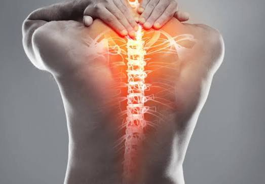
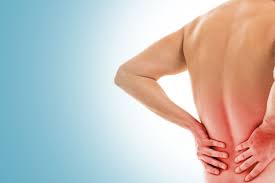

El dolor de espalda es una molestia común que puede afectar distintas zonas de la columna y tener causas como tensión muscular, malas posturas o lesiones. Suele ser temporal, pero en algunos casos puede volverse crónico, por lo que conocer sus causas y prevención es importante.

Introducción
El dolor de espalda abarca molestias en la región cervical (cuello), dorsal (centro de la espalda) y lumbar (parte baja). Puede ser agudo —por una sobrecarga— o crónico cuando persiste semanas o meses. Sus causas son variadas: desde tensiones musculares por malas posturas hasta problemas discales o condiciones inflamatorias. Además, factores como el estrés, el sueño y la ergonomía influyen de forma notable.
¿Cómo usar esta guía?
Lee las secciones para profundizar. Usa el chatbot para consultas específicas, describir síntomas o realizar un chequeo guiado. El asistente dará recomendaciones seguras y te indicará cuándo buscar ayuda profesional.
Breve consejo práctico
Haz pausas activas cada 30–45 minutos.
Ajusta silla y monitor para mantener la columna neutra.
Camina y estira suavemente a lo largo del día.
Causas
Las causas pueden ser múltiples y a menudo están combinadas. Aquí las detallamos:
1. Tensión y sobrecarga muscular
Los músculos de la espalda se fatigan si se mantienen tensos o se realizan esfuerzos repetidos. Esto ocurre con malas posturas prolongadas, movimientos bruscos o levantar peso sin técnica. La carga sostenida genera micro-lesiones en fibras musculares que producen dolor y rigidez.
2. Posturas mantenidas y ergonomía deficiente
Sentarse encorvado con la cabeza adelantada aumenta la presión en discos y articulaciones posteriores. La posición del ordenador, la altura de la silla o usar la cama como escritorio son hábitos que favorecen la aparición de dolor.
3. Degeneración y problemas estructurales
Con la edad o por predisposición, los discos intervertebrales pueden deteriorarse (deshidratación, protrusión, hernia). Esto puede causar dolor local o irradiado si hay compresión nerviosa.
4. Lesiones agudas
Accidentes, caídas o movimientos de torsión bruscos pueden dañar ligamentos, músculos o discos y producir dolor agudo.
5. Factores no mecánicos
El estrés y el sueño insuficiente elevan la tensión muscular y reducen la capacidad del cuerpo para recuperarse. El sobrepeso también modifica la carga sobre la columna.
Consecuencias
Corto plazo
Molestias, limitación para agacharse, rigidez matinal y dificultad para mantener posturas prolongadas. Puede alterar el sueño y la concentración.
Largo plazo
Si se cronifica puede causar reducción de la movilidad, pérdida de fuerza en la zona central (core), cambios posturales, dolor recurrente y repercusiones psicológicas como ansiedad o frustración. En algunos casos, la inactividad prolongada conduce a mayor debilidad y empeoramiento.
Impacto funcional
El dolor persistente reduce la participación en actividades escolares, deportivas y sociales, y puede generar dependencia de analgésicos si no se gestiona adecuadamente.

Prevención
Postura
Mantener una postura neutra: espalda apoyada, pelvis ligera anterior (no rotada), hombros relajados y pantalla a la altura de los ojos. Evita cruzar las piernas mucho tiempo.
Ergonomía
Ajusta la silla a la altura de la mesa, usa apoyo lumbar si es necesario y coloca los pies apoyados. Evita estudiar en la cama o con la tablet en el regazo por periodos largos.
Hábitos saludables
Realiza pausas activas (levántate y camina 1–2 min cada 30–45 min).
Camina 20–30 minutos al día o haz actividad moderada regularmente.
Fortalece el core con ejercicios recomendados por fisioterapia.
Controla el peso corporal.
Duerme con un colchón que ofrezca soporte; usa una almohada adecuada para el cuello.
Alternativas de solución seguras
Ejercicios y movilidad
Ejercicios suaves —sin forzar ni causar dolor—: caminatas, estiramientos de isquiotibiales, movilidad de cadera, activación del core (contracciones isométricas suaves) y movilidad de cuello/escápulas. Si el dolor es muy intenso, evita movimientos bruscos y consulta.
Fisioterapia y tratamiento profesional
Un fisioterapeuta puede evaluar tu caso y prescribir ejercicios específicos, terapia manual y recomendaciones ergonómicas. Es la opción más segura cuando el dolor no mejora con medidas básicas.
Autocuidado en casa
Compresas de calor para relajar músculos tensos (20 minutos).
Alternar calor y movilidad suave.
Evitar reposo absoluto prolongado; alternar con movimiento ligero.
Cuándo consultar
Si el dolor empeora, persiste por más de 2–4 semanas, aparece debilidad marcada, hormigueo extendido o signos de alarma (ver abajo), pide evaluación profesional.